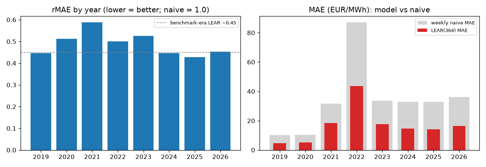
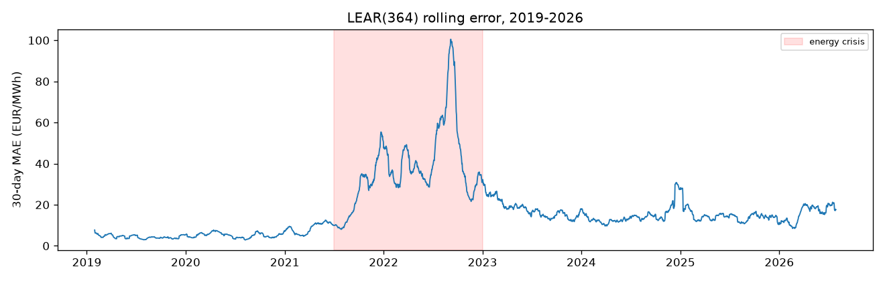
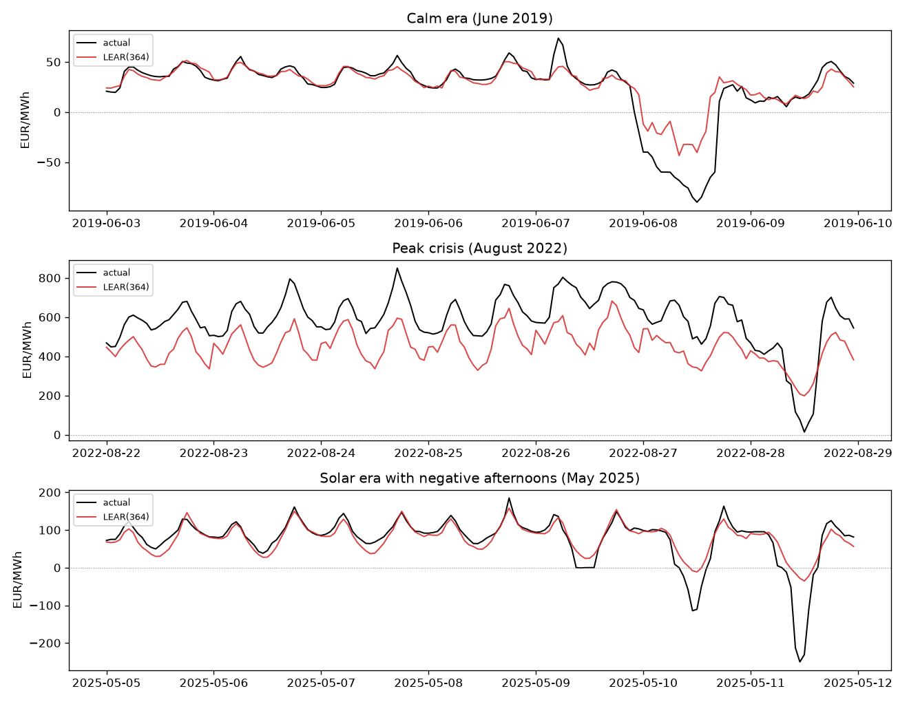

Generated 2026-07-30T16:10:24+00:00. Experiment lear-de
(pep run lear-de --set window=364), test period 2019-01-01 to 2026-07-29
(66,408 hours, daily recalibration, UTC-day convention). No published numbers exist for this
task; the naive baselines are the honest anchors. Overall: MAE 16.85, rMAE 0.492,
RMSE 30.47.
| year | MAE | rMAE (weekly) | naive weekly MAE | naive mixed MAE | RMSE | hours |
|---|---|---|---|---|---|---|
| 2019 | 4.597 | 0.447 | 10.28 | 9.733 | 7.359 | 8,760 |
| 2020 | 5.28 | 0.512 | 10.314 | 9.279 | 8.259 | 8,784 |
| 2021 | 18.524 | 0.588 | 31.526 | 24.251 | 30.392 | 8,760 |
| 2022 | 43.502 | 0.5 | 87.077 | 65.871 | 59.288 | 8,760 |
| 2023 | 17.665 | 0.525 | 33.629 | 28.685 | 24.834 | 8,760 |
| 2024 | 14.618 | 0.446 | 32.809 | 27.317 | 29.431 | 8,784 |
| 2025 | 14.062 | 0.428 | 32.82 | 27.482 | 22.494 | 8,760 |
| 2026 | 16.395 | 0.453 | 36.171 | 29.995 | 29.052 | 5,040 |


